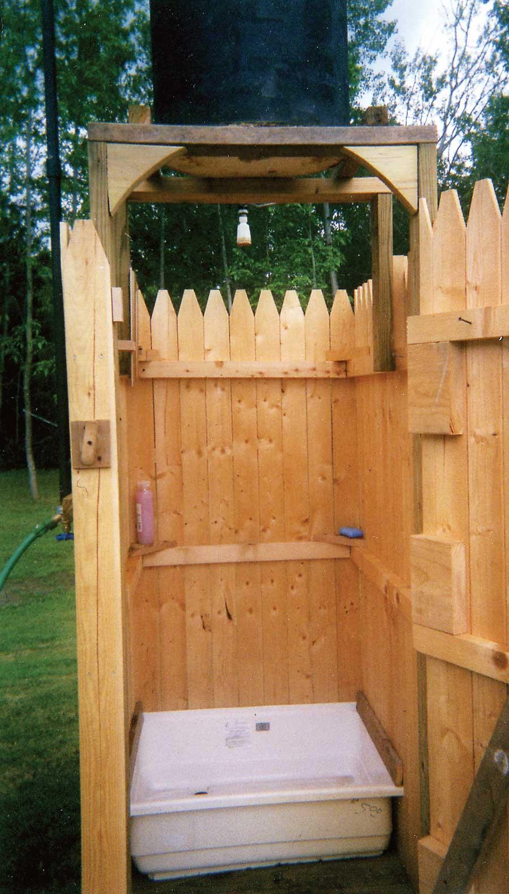

This outdoor shower is one of the ways I conserve energy. The sun heats the water in the black-painted tank on top for my shower each day. After showering, I refill the tank with the garden hose and the sun heats the water for the next day’s shower.
I spent about $140 on the project. The tank is an old water heater that I stripped down and painted flat black. I put an overflow vent on top to let me know when it is full, and also to prevent airlock. I added a shut-off valve just before the shower head.
I picked up the shower base at a garage sale for $5. The walls and door are two pieces of privacy fencing that I cut down to fit. The floor is made from treated lumber.
|
 TIM MASON Caution: Be sure to build the platform for the water tank stout enough to hold the tank full of water. A full 50-gallon tank weighs about 400 pounds. Check the water before getting in to be sure it’s not too hot. - Mother |
|
|